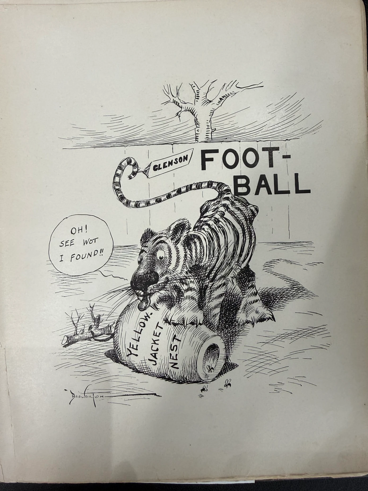
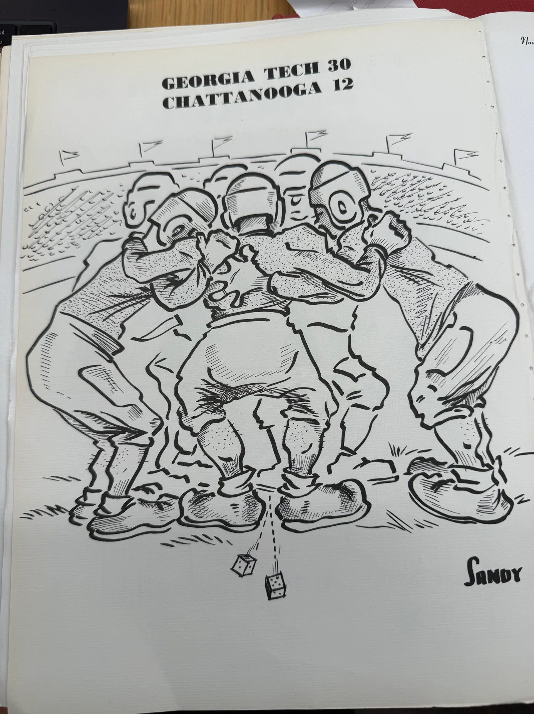
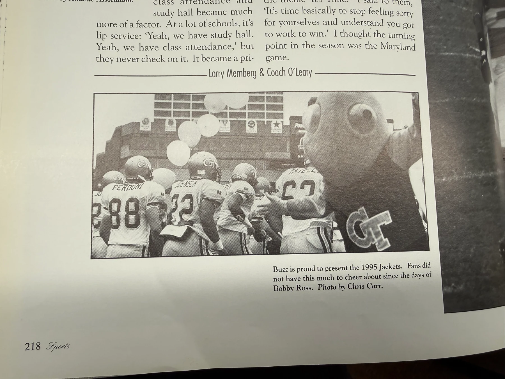
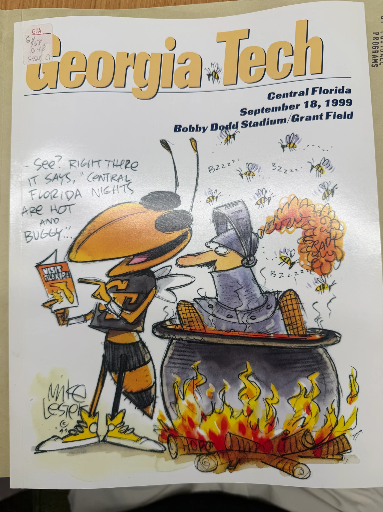
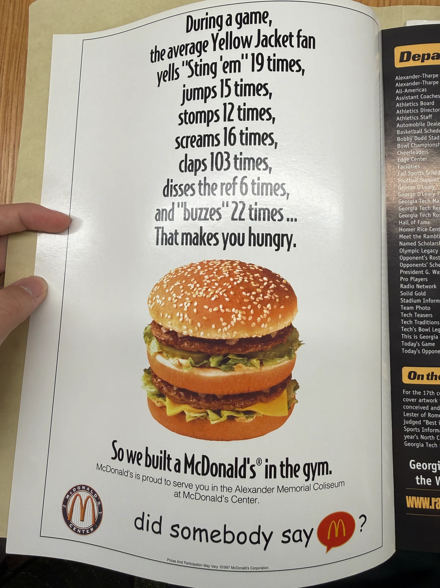
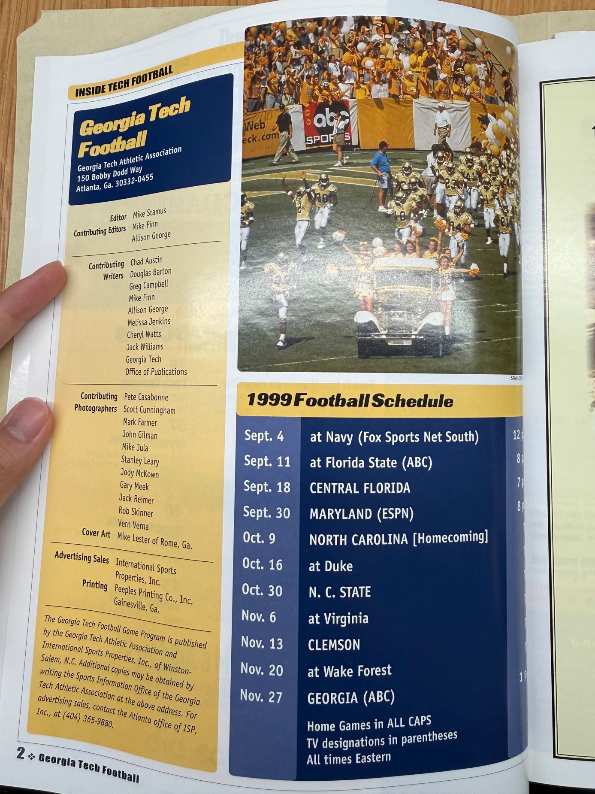
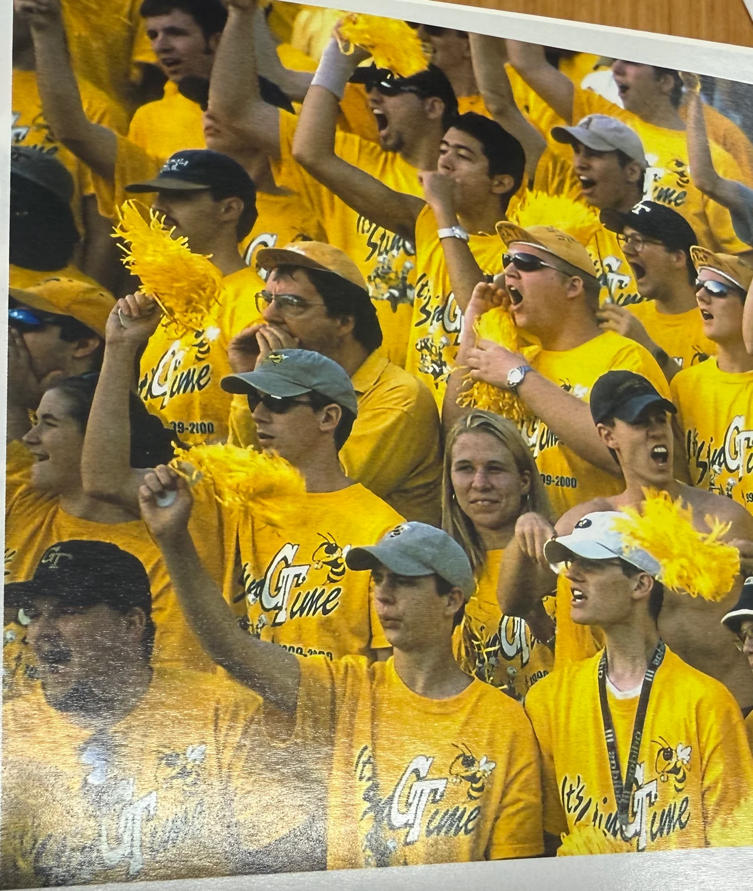
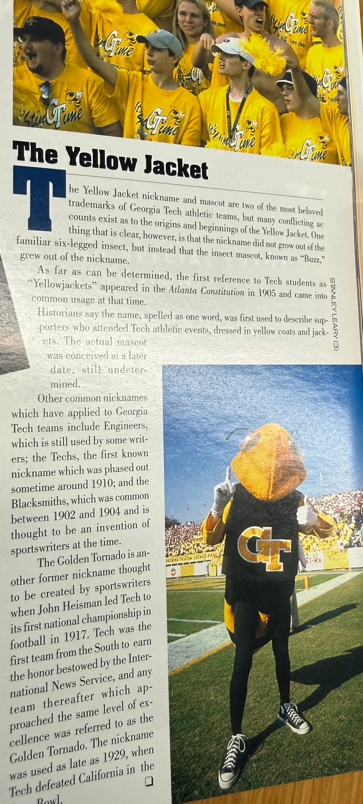

Drawing a Tech identity
Before Buzz existed, students were already drawing what Tech’s identity looked like. The 1908 Blue Print has cartoons making fun of rivals, including a Clemson tiger, and one of the football programs does the same thing to Chattanooga. Rivalries gave students something to rally around, and students were the ones drawing these images.




From 1921 to 1955, students ran a humor magazine called the Yellow Jacket. It had cartoons, illustrated covers, and issues themed around football and homecoming. The yellow jacket was a symbol students kept using and redrawing in their own way, years before it became part of official school branding.
A homemade costume
Students tried other yellow jacket costumes before the Buzz we know today, including one made and worn by Judi McNair in 1972. On April 19, 1979, Richie Bland showed up to a spring pep rally wearing a homemade yellow jacket costume, and he brought it onto Grant Field that fall. In 1980, Buzz became Tech’s official mascot (Georgia Tech Athletic Association). The students who perform as Buzz keep their identities a secret until they graduate (Georgia Tech Alumni Association).
From the sidelines to the cover
By the mid-1990s, Buzz was part of how the team ran out onto the field. A photo in the 1996 Blue Print shows Buzz escorting the 1995 team, with the caption “Buzz is proud to present the 1995 Jackets” (Memberg, 1996). By 1999, Buzz was on the cover of a football program. That same program carried a McDonald’s ad describing fans cheering and clapping. School spirit had also become part of how sponsors talked to fans.
From cartoons to game programs
Open a card to see what each source adds to the story.
1908 · A rivalry cartoon
1995 · Buzz leads the Jackets
The entrance gave the mascot a role in a ritual fans saw every home game.


1999 · Buzz on the cover
The Central Florida game program put Buzz on its cover, where fans could recognize the mascot before they even opened it.

1999 · Fans in the advertising
A McDonald’s ad counted cheers, jumps, and claps in its sales pitch. Elsewhere in the program, photographs put fans alongside the season schedule.




Buzz in the stands and on the brand
Today, Buzz is known for doing acrobatics, messing around with fans, and even crowd surfing in the student section (Varnes, 2024). Georgia Tech also plans events around Buzz. For “Buzz Day” in October 2025, the athletic department promoted a game with Buzz merch and a sweepstakes. Tech’s brand guide has rules for how Buzz can be shown. Its earlier Tech Gold was #B3A369.
A symbol students drew in their publications became a homemade costume, an official mascot, and eventually part of the university’s brand. Students are still the ones inside the suit, and the university and sponsors now help shape where Buzz appears.




What our sources don’t show
The Buzz sources we found are mostly polished, like program covers, ads, and official photos. They offer little direct testimony from Richie Bland or other early performers about what it was like to make and wear the costume. The tradition of keeping performers’ identities secret until graduation makes it especially hard to follow the people behind the mascot in these sources.